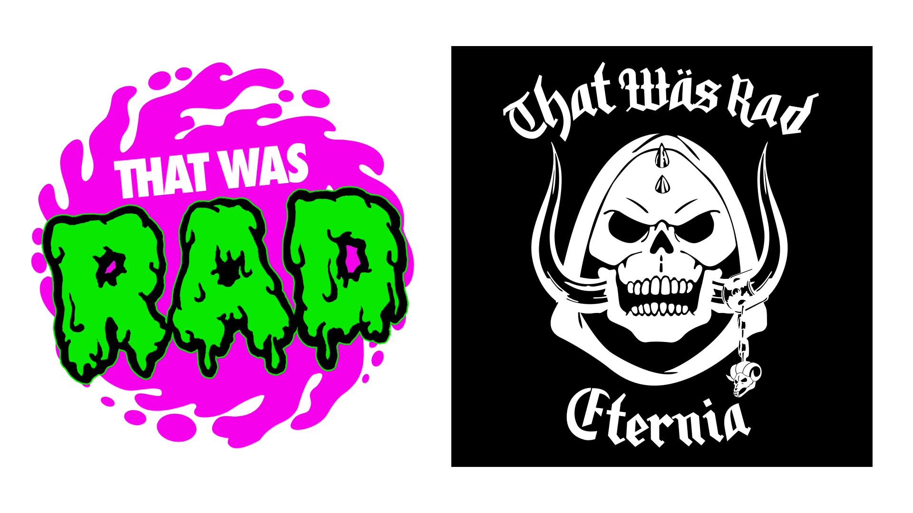
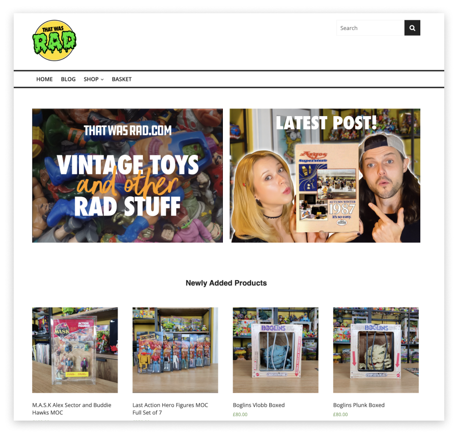
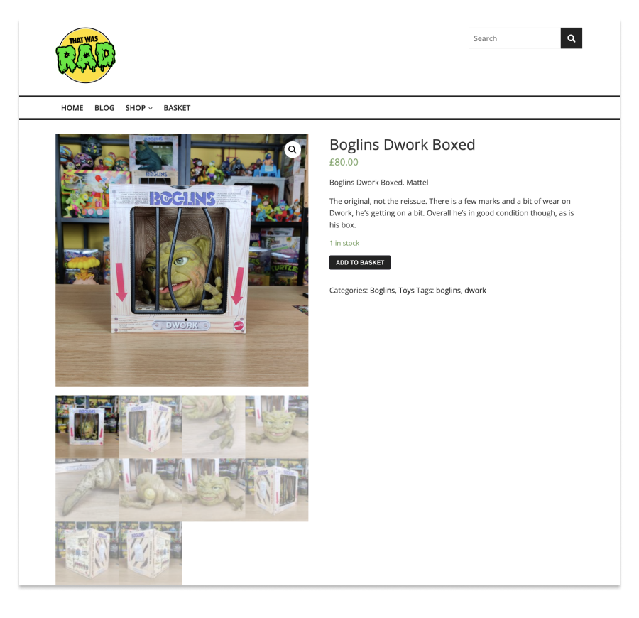

A passion project, thatwasrad.com was a UK based independent seller of Vintage Toys and games from the 70's 80's 90's and beyond. It grew out of a hobby of collecting awesome stuff from when we were kids fuelled by nostalgia, cartoons, video games and refusal to grow up.
it was built using Wordpress and the Woocommerce plug-in.
We also dabbled in a bit of Youtube
We're on an indefinite hiatus at the moment but we may rise from the ashes again. You never know.

